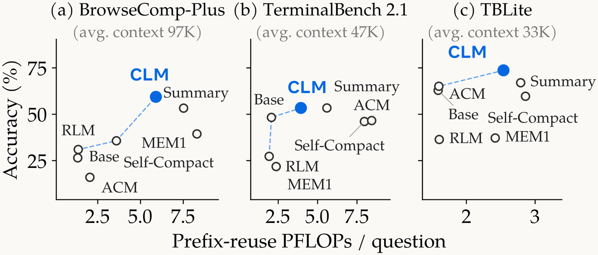
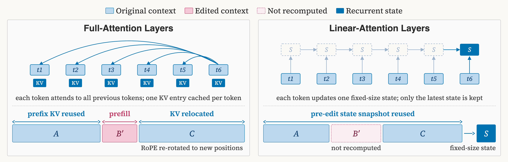
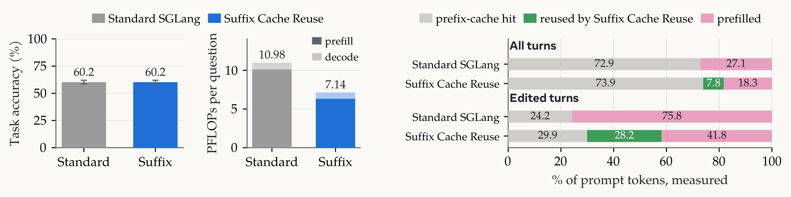
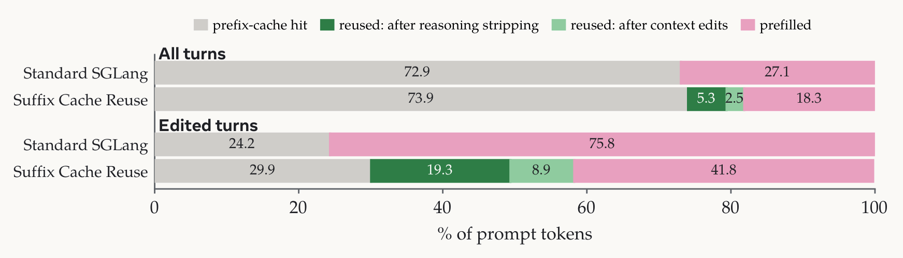
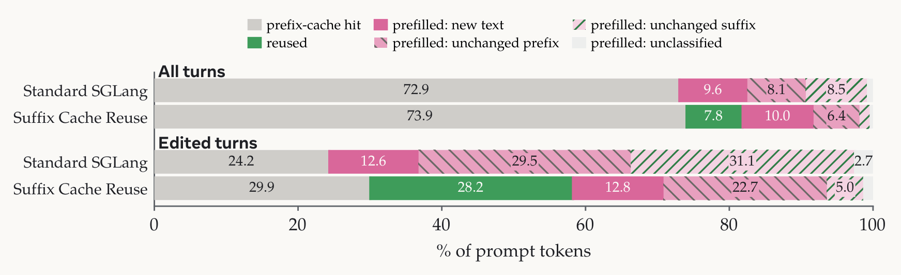

CLM（Context Language Models）把context当文件，可以任意改写。代价是：中间改一个字，前缀缓存从改动处断掉，后面没变的几万token全重算。
这篇是CLM团队的效率深挖：用什么度量抓住真实的缓存感知服务成本，以及Suffix Cache Reuse怎么把命中率救回来。下面拆开。
谈效率先对齐度量。CLM团队用Prefix-Reuse FLOPs：从第一个前缀失配处开始的prefill FLOPs，加上新生成token的decode FLOPs。公式写出来就是FLOPs(PrefixReuse) = FLOPs_prefill(失配后缀) + FLOPs_decode(新token)。默认用它量CLM效率，说CLM比baseline便宜时，已经把编辑导致的缓存命中下降算进去了。
Pareto图上，CLM在BrowseComp-Plus（平均context 97K）、TerminalBench 2.1（47K）、TBLite（33K）三个榜上，精度和效率都压过RLM、Summary、ACM、MEM1、Self-Compact这些人工设计的context管理harness。注意横轴已经是prefix-reuse PFLOPs每题，不是理论FLOPs。

SGLang和vLLM的KV缓存（比如radix树）复用新请求的最长匹配前缀，第一个失配后的token全重算。这对append-only历史很自然，但中间一编辑就崩。例子：context ABC改成AB′C，颜色对token条，A还匹配所以复用，失配断在B′，B′和没变的C一起重prefill。
数字上，Qwen3.6-27B的CLM在BrowseComp-Plus，标准SGLang全部turn有72.9%的prompt token走前缀缓存，编辑后turn只剩24.2%。编辑turn剩下的大半context，明明没变，也被重算了。chat模板剥掉前面turn的thinking token也一样：后面的token下turn重prefill。
前缀缓存是传统，因为context一直是append-only。CLM团队问：能为AI的方便改造serving引擎吗？Suffix Cache Reuse（SCR）就是答案：context ABC里B被换成B′，标准serving复用A的缓存然后停下，B′和整个C重算；SCR把C的缓存状态留下来。
机制：下个prompt来时，SCR和同session的上个prompt比，找出编辑后存活的span，把它们的旋转位置编码平移到新位置，拼在B′后面。只有B′和新append的token要prefill。标准serving和SCR的对比里，叉号标第一个前缀失配位置。

全注意力层里，SCR原样复用C的key和value，只动位置：编辑后C整体前移了B和B′的长度差，SCR把它的旋转位置编码按这个偏移重转。旋转只依赖位置，所以这个操作是精确的，比重算便宜得多。但SCR是近似：C的缓存是在编辑前的旧context下算的。为控制一次编辑引入的近似，每次编辑最多搬6个存活span，长的优先，剩下的重算。k=6的设定和影响在论文附录B。
Qwen3.6-27B是hybrid模型：64层里48层用线性注意力， نگه的是固定大小的循环状态，没有逐token缓存可搬，这些层SCR从编辑前拍的循环状态快照继续。编辑被16个全注意力层看到，再经它们的输出传到后面的线性层。
评测很干净：830道题，把Qwen3.6-27B的endpoint从标准SGLang切到打了SCR补丁的SGLang（论文5.3节），实现开源在facebookresearch/context-language-models/suffix_cache_reuse。精度完全一样，60.2%对60.2%，每题算力从10.98降到7.14 PFLOPs。
编辑后turn，SCR让额外28.2%的prompt走搬运缓存，那是标准serving会重算的部分。CLM本来就靠更好的context管理在标准serving下比baseline便宜，SCR再把服务成本压到原来的65%。

有些chat模板serving会剥掉前面turn的reasoning block，后面的unchanged后缀被迫重prefill，SCR把这部分后缀缓存也复用了。分解下来，SCR多复用的大头其实来自被剥的reasoning，而不是CLM编辑。
编辑后turn的分解：标准SGLang只有24.2%走前缀缓存，SCR是29.9%前缀加19.3%来自reasoning剥离的复用加8.9%来自context编辑的复用，重算从75.8%压到41.8%。

SCR干掉了编辑后unchanged后缀的大部分重算，剩下的开销大头是标准SGLang对hybrid模型复用不充分的unchanged前缀：线性注意力的状态只在请求边界缓存。更细粒度的循环状态checkpoint能同时抬高标准前缀缓存和SCR的命中率。
更广义地，可编辑context的serving打开了一堆新系统研究方向，SCR只是第一步。

标准前缀缓存下，改prompt前面一点，后面全重算，前人从几个方向松这个约束。Prompt Cache给预定义的prompt模块预计算attention状态，模块能在不共享前文的prompt里复用，RAG里同一文档出现在不同文档或指令后面时有用。CacheBlend和EPIC在新context里复用缓存的文档块，重算部分token适配变化的环境。
PIE研究用户改已处理的代码后要新补全：保留编辑后unchanged文本的缓存状态并修正旋转位置，免掉后缀重算。Memento把做完的reasoning block逐出KV cache但保留它summary的缓存状态（在block还在context里时算的），发现这些状态保留了被逐block的有用信息。同期还有KV-streams，在agent compaction时保留KV cache。
参考：https://wai-org.com/blog/clm/